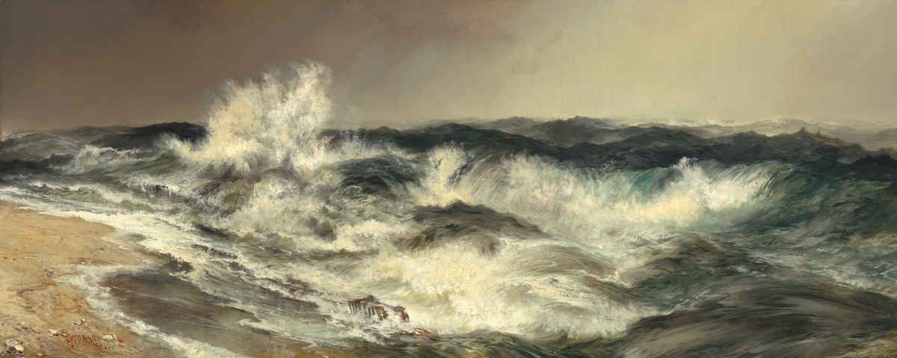

Nouvelle écrite pour le concours de nouvelles de l'INSA
Thème : la Méditerranée
Mars 2015
La chaleur de juin se faisait sentir dans les rues de Canicatti. Le soleil semblait peser sur les épaules fatiguées d'Aldo. La sueur perlait sur son front, signe physique de la canicule qu'il vivait intérieurement. Les rues se désertaient, comme cela se produisait à chaque début d'été au sud de la Sicile. Pas un homme dehors. Si ce n’était le vieil Aldo.
L’homme solitaire accéléra le pas. Si cela continuait, il serait en retard pour son train. Il laissa échapper un mince soupir. Le week-end avait été long. Il était venu dans cette partie de l’Italie pour s’occuper de son père, mourant. Mais était-ce réellement nécessaire ? Son frère n’avait cessé de l’inonder de reproches. Oui, il ne lui rendait pas assez souvent visite… Mais il refusait de céder à l’idée selon laquelle la famille ne signifiait rien pour lui. Il habitait simplement trop loin. Il n’était pas fautif - ou du moins essayait-il de croire.
Il arriva à la gare plus tôt que prévu. Cela signifiait une longue attente sous ce soleil brûlant - perspective peu enviable pour le vieil Aldo. Il se plaça au bord des rails, espérant ainsi capter un courant d’air frais par instant. Les minutes s’écoulèrent lentement, laissant ainsi le temps à l’Italien de se remémorer en boucle les paroles accusatrices de son frère. Ou le regard perdu de son père duquel la vie semblait déjà être partie. Parfois, Aldo se demandait même s’il se souvenait de ses propres fils. Oh non bien sûr, il n’oublierait pas Noris, il le côtoyait tous les jours. Mais ce n’était sûrement pas le cas de celui qui venait de l’autre bout du pays. Nouveau soupir.
Un homme courbé interrompit ses songes. Il s’approchait lentement vers Aldo en marmonnant des paroles inaudibles. Sa barbe longue et grise pendait de façon anarchique de son menton ridé. Il était vêtu de haillons et de vieilles baskets, ce qui laissait supposer qu’il dormait dans les rues. Lorsqu’il fut assez proche du voyageur, un étrange sourire apparut sur son visage.
« La charité, Monsieur, demanda-t-il d’une voix criarde. »
Il tendit sa main droite, attendant une réponse de l’Italien. Ce dernier détourna le regard et ignora le mendiant. Habitude sociale que chacun aurait réalisée : on ne pose pas les yeux sur la misère. Avons-nous honte ou peur qu’elle nous atteigne à notre tour, tel un terrible virus destructeur ? Mais le barbu n’en démordit pas.
« Une petite pièce pour manger, dit-il en s’approchant toujours plus. »
Ignorer ce qui se déroulait devenait de plus en plus difficile, compte tenu de la proximité entre Aldo et le sans abri. Et cette chaleur qui ne descendait pas, ce courant d’air qui refusait de se manifester…
« Les temples d’Agrigente vous puniront pour votre absence de cœur, Monsieur, cria le vieil homme. Zeus, victorieux contre Carthage, saura trouver une peine digne de ce que vous méritez ! Agrigente, Agrigente, vous verrez ! Les corbeaux vous mangeront l’estomac jusqu’à la nuit des temps… »
A ces derniers mots, le mendiant attrapa le T-Shirt d’Aldo. Surpris, l’Italien tourna enfin la tête pour faire face à cette misère, à ce vieux fou et à ces mots insensés. Mais le regard qu’il croisa n’était pas celui du sans abri : c’étaient les yeux de son frère qu’il voyait maintenant... Puis tout se passa rapidement. Une vague de dégoût s’empara d’Aldo. Il écarta l’importun d’un violent coup de bras. L’homme en haillons perdit l’équilibre et tomba sur les rails. Sonné, il ne se releva pas tout de suite. Sans qu’Aldo n’ait le temps de comprendre ce qui venait de se dérouler, son train arriva – un peu trop vite sûrement… Et sous ses pupilles terrorisées, le corps du mendiant fut broyé.
La sueur redoubla sur le front de l’Italien. Ses pensées se mélangeaient ; il ne voulait pas croire ce qui venait d’arriver. Ce n’était pas possible, il devait rêver… Il se réveillerait bientôt, et tout irait pour le mieux. Mais les secondes défilaient et la réalité refusait de disparaître. Le conducteur du train descendit pour essayer de comprendre l’évènement macabre.
Alors Aldo se mit à courir. Réflexe de survie. Il monta dans un wagon de la voie voisine. Direction Agrigente. Il n’avait plus que ces mots en tête : la ville aux ruines, le temple de Zeus… Ces paroles dénuées de sens et qui pourtant semblaient en avoir maintenant. La punition suprême pour ne pas avoir eu de cœur. Il la trouverait là-bas. Un instinct animal l’appelait vers ce lieu mystique.
Le stress du criminel malgré lui grimpait au fur et à mesure du voyage. Les roues du train crissaient à chaque virage, et à chacun d’entre eux, l’Italien espérait se réveiller de ce cauchemar ambiant. Il plantait ses ongles dans le siège abîmé sur lequel il était assis. Il voulait oublier ce bain de sang dont il avait été témoin – témoin, non, bien pire, initiateur ! Etait-il le même homme maintenant qu’il avait ôté la vie à un être humain ?
Un tintement mécanique informa les passagers de leur arrivée dans la ville archéologique. Aldo descendit en vitesse du wagon – il ne savait s’il fuyait des quelconques autorités ou lui-même. Il était sûrement l’homme qu’il avait le plus à craindre en cet instant. Son propre ennemi progressait sous sa chair. Tel un poison vénéneux, sa haine se répandait dans ses veines. Aldo courait, ne laissant rien l’arrêter. Sinon, ce serait son passé qui le rattraperait.
Après une longue course exténuante, Aldo arriva devant les ruines romaines. Elles étaient grandioses, s’élevaient à des dizaines de mètres au-dessus du sol. Le victorieux de Carthage viendrait donc enfin le punir pour ses crimes. Ici, il subirait la colère des dieux que chérissait le vieux fou. Zeus, Héra, Castor, Pollux, ils viendraient le chercher pour l’enfouir au plus profond des océans ! N’était-il pas en train de devenir aussi aliéné que sa victime ? Peu importait, il voulait que la foudre divine s’abatte sur son corps. En finir. Il avait tué, il attendait maintenant son châtiment suprême.
Mais son incantation se termina rapidement ; une guide locale accompagnée d’une horde de touristes de toutes nationalités arrivait sur le site archéologique. Elle piaillait des informations dans la langue de Shakespeare – qu’Aldo ne fit pas l’effort de traduire. Sa colère montait au fur et à mesure que la femme se dandinait. Et ces moutons qui la suivaient, tous armés de leur appareil photo dernière génération… Pas un seul ne pouvait imaginer sa détresse, eux dans leurs vies si faciles – vie qu’avait partagé le vieil Aldo quelques heures auparavant. Mais il avait sombré d’un autre côté aujourd’hui. Du côté de ceux qui avaient tué.
Il ne put supporter la vision de cette meute bêlante plus longtemps. L’Italien tourmenté sauta par-dessus une petite haie de broussailles et se dirigea vers la mer. Tout était si calme. L’eau plate ne remuait pas d’un millimètre. Aucune vague ne troublait l’ambiance paisible de cette plage reculée. Nouvelle déception pour notre coupable. Lui qui avait espéré une tempête, une explosion d’écume. Un spectacle de destruction qui l’aurait englouti juste après. Punition face au crime qu’il venait de commettre. Mais non, la mer Méditerranée se complaisait dans sa sérénité perturbante.
Rien. Pas une brise, pas une vague. Aldo avait tué un homme ce matin ; et pourtant le monde continuait de tourner. Personne n’avait pris la peine de s’arrêter pour lui faire payer son geste. Non, rien, le néant. Simplement ce silence méditerranéen. Où était la justice quand lui pouvait vivre après une telle action ?
Aldo enfouit sa tête dans ses mains et laissa tomber ses genoux contre le sol. L’assassin versa ses larmes amères. Il sentit soudain une main sur son épaule. Un enfant était venu le rejoindre – il venait probablement du groupe de touristes.
« Qu’y a-t-il, Monsieur ? demanda-t-il d’une mince voix. »
L’innocence qui perlait dans les yeux de ce gamin toucha directement le cœur d’Aldo. Il l’avait approché, lui, le tueur, le monstre, le démon funeste. La blanche colombe venait demander au loup noir et galeux s’il allait bien… Quelle situation grotesque ! Il ne méritait pas même un regard de cet être encore pur.
« - Sais-tu s’il y aura du vent demain, petit ? répondit l’Italien. - La météo a prévu un grand soleil, je crois. »
A ces mots, Aldo grimaça. A quoi bon rester un jour de plus ici, si la colère des dieux ne se manifestait pas ? Il partirait aujourd’hui, c’était ce qu’il restait de mieux à faire. Pour la justice. La grande justice.
Aldo se pencha vers le garçon. Ce dernier recula d’un pas – peut-être avait-il peur de l’assassin finalement. Mais le tueur arriva jusqu’au creux de son oreille. Il murmura quelques paroles inaudibles puis se releva aussi vite. Il marcha vers la mer, toujours aussi calme en ce début de juin. Il ne s’arrêta pas en arrivant au bord de l’eau. L’Italien continua, trempant ainsi les vêtements qu’il portait en plus de ses chaussures. Il avança encore et encore, s’éloignant toujours plus de la rive pour aller vers le large.
Le garçon suivit Aldo des yeux jusqu’à ce qu’il ne soit plus qu’un minuscule point noir au loin. Il se remémora alors ce que le vieil Italien lui avait chuchoté dans l’oreille : il ne savait pas nager.